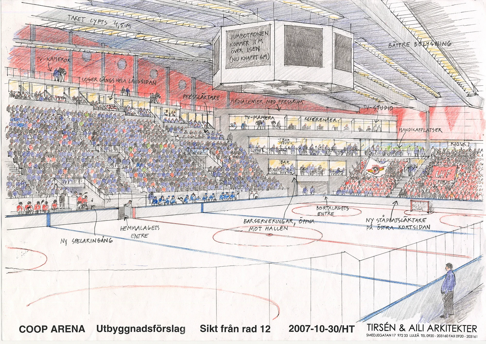
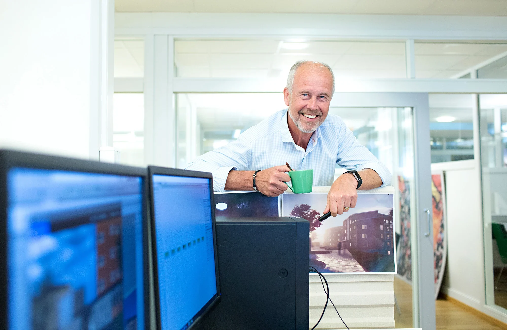

Luleå
Storgatan 52B972 31 Luleå0920-20 31 60Hitta hit
Arkitektur som håller ihop.
Från stadens stora sammanhang till detaljen du tar på.
Vi är arkitekter och byggnadsingenjörer som arbetar genom hela processen. Från de första frågorna om en plats till byggnaden som blir en del av människors vardag.
Ett urval av vårt arbete. Rum för kultur, lärande, vardag och nya möten.
Att pröva, vrida och se sammanhangen. På ritbordet får platsens möjligheter en första form.

Originalmaterial från projektarkivet. Ej skalenligt på skärm.
I skissen för COOP Arena undersöks en ny helhet kring isen. Publik, siktlinjer och rumslighet tar form på samma blad.
Utforska projektetArkitekturen blir stark när idé, funktion och genomförande får utvecklas tillsammans.
Utforska vårt arbeteVi börjar med platsens förutsättningar och verksamhetens behov. Utredningar och programarbete ger riktning åt de första idéerna.
Skisser, fysiska modeller och digitala verktyg hjälper oss att pröva volym, rum och samband.
Genom A-projektering och samordning utvecklas idén till ett underlag som går att bygga efter.
Projekteringsledning, projektledning och uppföljning håller samman arbetet genom projektets olika skeden.

Olika erfarenheter. Samma omsorg om helheten. Hos oss möts arkitektur och ingenjörskunskap, skisspapper och digitala modeller.
Möt människorna bakomMed rötterna i Luleå och kollegor i Skellefteå och Stockholm.